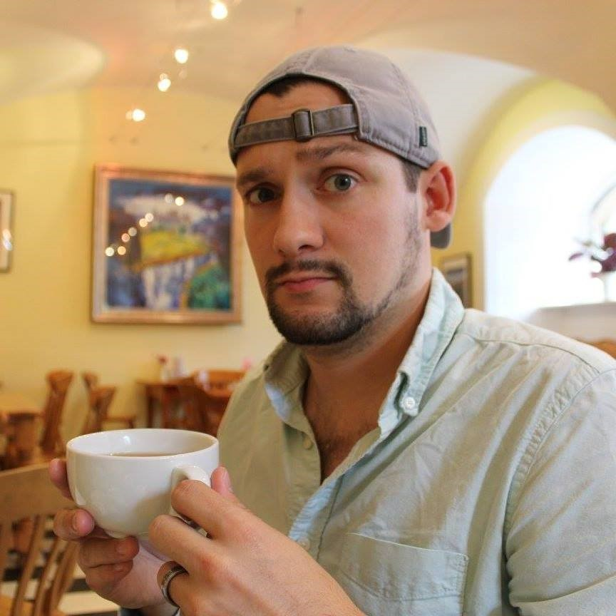

Meet the Staff
Erin Bisca
Erin Bisca has always had a fierce love of animals and growing up with her sister who suffers from Down Syndrome, Erin has also had a fierce love of helping those in need. After years of school, training and work experience she has finally achieved her dream of being able to help people using animals as her primary method. Erin graduated from College of Charleston with a degree in Biology where she met her husband Tommy Bisca. After graduating from College of Charleston, Erin attended The Citadel where she graduated with her master’s degree in Clinical Counseling.
Erin did three internships, one with MUSC pediatrics department, another with Charleston Mental Health Center and a third with Dorchester Children Advocacy Center. After her internships she started working with Dorchester Children’s Advocacy Center as a Forensic Interviewer and therapeutic counselor. She worked there for three years before taking the big step to enter into her own practice by founding Healing Horses of Charleston.
Tommy Bisca
Tommy Bisca is Erin’s husband and has always been fond of helping her with and sharing her dreams. Tommy graduated from College of Charleston with a degree and Biology and then went on to study computer programming at Trident Technical College. Although Tommy isn’t trained in the clinical counseling discipline, he helps by taking care of all the horses, other animals and the riding grounds.
Tommy has always been around animals from a young age as his father was a wild life rescue ranger and there were constantly all sorts of animals coming in and out of Tommy’s life. Tommy learned how to care for and bond with almost any animal and those skills serve him well here. Meeting Erin was the happiest day of his life, as he finally found someone who shared his passion for animals.